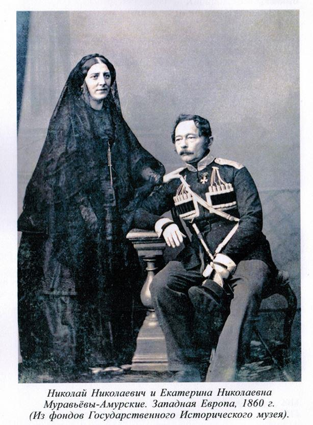
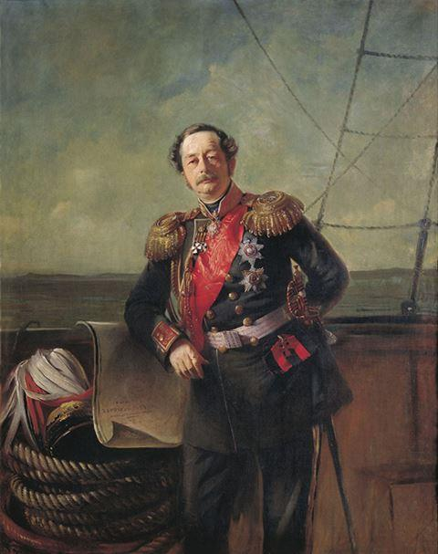
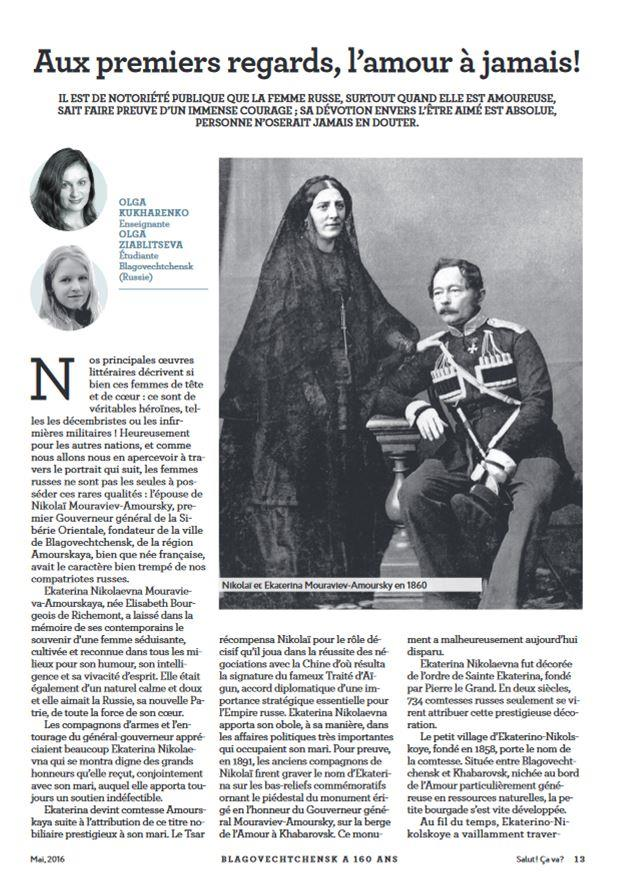
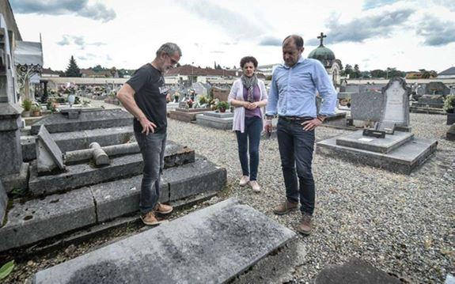
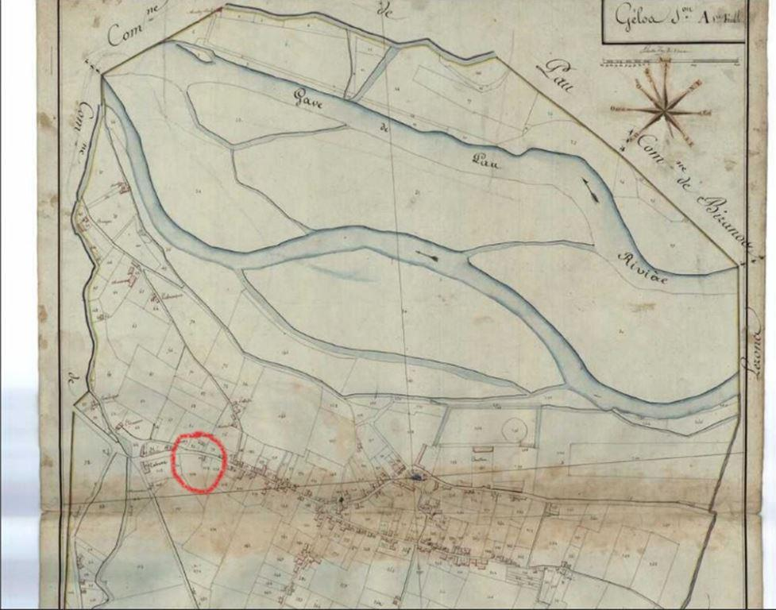
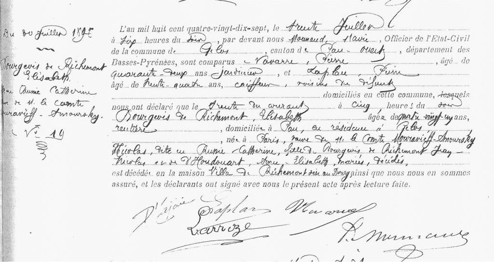
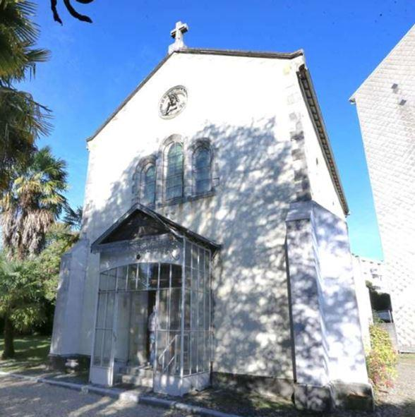
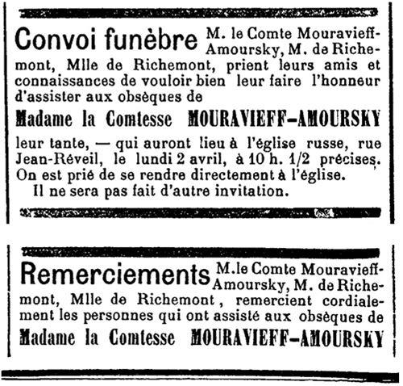
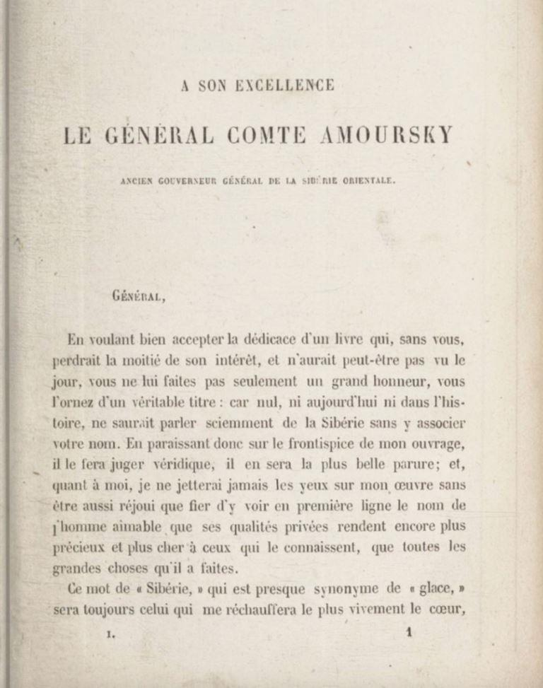
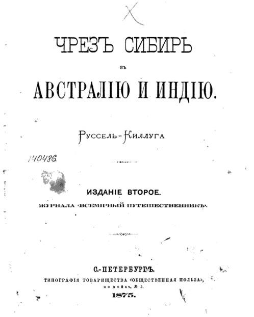

À la recherche du passé français de la comtesse Mouravieva-Amourskaya
par Olga KUKHARENKO
Cette histoire commence au début de 2016 où « Salut ! Ça va ? » s’apprêtait à se joindre aux célébrations du 160e anniversaire de Blagovechtchensk. Nous avons décidé de consacrer un numéro spécial à l'histoire de la ville, à ses personnalités exceptionnelles, aux dates importantes et aux faits inscrits dans ses annales historiques.
Nous avons étudié les publications des Français célèbres qui ont visité notre région à différents moments. Les étudiants de l’Université pédagogique de Blagovechtchensk ont réuni et traduit en français des documents sur l’histoire de la ville, sur les monuments architecturaux et sur les sept merveilles de la région de l’Amour.
Une série d’articles a été consacrée à la figure historique exceptionnelle, l'homme d'État russe et chef militaire, gouverneur de la Sibérie orientale de 1847 à 1861, fondateur de la ville de Blagovechtchensk Nikolaï Nikolayevich Mouraviev-Amoursky. Bien sûr, nous nous sommes également intéressés à la personnalité de l’épouse du gouverneur Ekaterina Nikolaevna qui, comme nous le savions, était d’origine française. Les résultats de nos recherches ont été publiés dans le numéro spécial du magazine en mai 2016, mais ils sont finalement devenus le début d’une histoire fascinante et des découvertes uniques.

Au nom de l’amour

Au tout début nous voulions retrouver les descendants de la famille Mouraviev-Amoursky en France, le lieu de sépulture d’Ekaterina Nikolaevna, sa maison.
Mais avant de nous lancer dans les recherches en France et solliciter nos amis et collègues français qui pourraient nous y aider, nous avons étudié attentivement les faits déjà connues sur Ekaterina Nikolaevna présentées dans les recherches des historiens russes basées sur les documents des Archives d’État de Russie et sur le travail fondamental prérévolutionnaire de l'archéographe I.P. Barsukov de 1891. Ils décrivent principalement la période sibérienne de la biographie d’Élisabeth Bourgeois de Richemont, c'est-à-dire à partir de 1847, lorsqu’elle part vivre en Russie, adopte l’orthodoxie et épouse Nikolaï Mouraviev, et jusqu'en 1861, la date à laquelle le gouverneur général de Sibérie orientale démissionne et le couple part vivre à Paris.
La chercheuse Nina Dubinina, citant les documents de Barsukov, nous parle d'Ekaterina Nikolaevna, de sa rencontre avec son mari, de leurs relations et de son rôle indéniablement exceptionnel dans la vie de l’homme d’État Nikolaï Mouraviev-Amoursky, et donc dans la formation de l’État russe. Selon les témoignages de ceux qui connaissaient Ekaterina Nikolaevna, elle était très belle, intelligente, bien éduquée, de caractère doux, équilibré, de bon cœur. Elle ressentait un grand amour pour sa nouvelle patrie. Les lettres de Nikolaï de cette époque sont pleines d’admiration à l’égard de son épouse :
« Douce, belle, intelligente et la plus adorable, elle a charmé tout le monde ici ! … je ne parle pas de moi, car on pourrait me croire partial ».
Dans une autre lettre à son frère :
« … je vous demande d’aimer ma petite Katenka… elle le mérite vraiment par son intelligence et sa grande cordialité ; et pour ce qu’elle a fait au nom de notre amour, elle est au-dessus de tous les éloges et approbations ».
Nikolaï était très touché par l’immédiate conversion de son épouse à la religion orthodoxe.
A la grande joie de Nikolaï, elle décide d'apprendre le russe.
« Ma Katenka est maintenant en classe de russe. Avec ses capacités extraordinaires il y a espoir qu’elle parlera et écrira très bientôt ».
Ekaterina Nikolaevna aimait aussi passionnément le général. Ce sentiment presque divin inspirait et donnait des ailes à Nikolaï. Il l’aidait à supporter « l’absence de confiance complète de la part de l’Empereur » Alexandre II, sa malveillance, ainsi que la jalousie et les mesquineries abjectes des fonctionnaires de Saint-Pétersbourg.

Ainsi, en étudiant les recherches des historiens russes sur la comtesse Ekaterina Nikolaevna Mouravieva-Amourskaya nous avons pu recueillir suffisamment de matériel pour le traduire en français et le publier dans « Salut ! Ça va ? ». Et ce travail nous a inspirés de poursuivre les recherches, tellement la personnalité de la comtesse nous a passionnés. D’autant plus que nous avons appris du livre de Nina Dubinina, que la période « française » de vie de la comtesse Mouravieva-Amourskaya avant le mariage en Russie et après la démission de son mari et leur départ pour la France, est inexplorée. Nous sommes, donc, partis à la recherche du passé « français » de la Comtesse Mouravieva-Amourskaya.
Premières découvertes
« Les bons amis sont comme les étoiles : tu ne les vois pas toujours, mais tu sais qu’ils sont toujours là ».
Et c’est vrai ! Une heureuse coïncidence : mon amie, mon ancienne étudiante Natalia Romanchenko a justement travaillé, il y a une dizaine d’années, comme assistante du professeur de russe au Lycée de Louis Barthou à Pau.

Et c’est tout à côté de Gelos, la petite ville béarnaise ou a vécu ses dernières années Ekaterina Nikolaevna, née Élisabeth Bourgeois de Richemont. Natalia elle-même habite déjà dans une autre région de France, mais elle a gardé de bonnes amitiés dans ce coin béarnais.
Serge Paillard, militaire à la retraite, grand amoureux de la Russie et de la culture russe, habitant à proximité de Gelos dans la ville de Tarbes, a immédiatement répondu à sa demande de nous aider dans notre recherche. Et, une heure plus tard, surprise incroyable, Serge m’envoyait des photos de la sépulture familiale d’Élisabeth Bourgeois de Richemont ! Pour la trouver, en ce peu de temps, il a contacté la mairie de Gelos, où on lui a présenté des documents d’archives indiquant l’emplacement de la tombe des Richement au cimetière municipal. Sur la pierre tombale, presque entièrement détruite, on lisait à peine les noms de la famille Richemont. Malheureusement, même plus tard, plus jamais personne n’a pu déchiffrer complètement ce qui était écrit sur la pierre.
À ce moment-là tant d’émotions m’ont saisie - joie, enthousiasme et surtout l’envie d’aller plus loin ! Mais aussi des doutes : qu’est-ce qui avait déjà été découvert par les chercheurs et qu’est-ce qui restait inconnu et inexploré ? Tatiana Ananyina, une autre chercheuse de Khabarovsk écrit dans son livre : « J’ignore si la sépulture familiale Richemont à Gelos existe encore. Probablement, Anne Élisabeth d’Houdouart, la mère Élisabeth y fut enterrée la première. Les archivistes français m’ont dit que s'ils apprenaient quelque chose sur la tombe de la famille de Richemont, ils m’en informeraient. Peut-être que de nouvelles découvertes nous attendent. »
Et c’est nous qui nous avons fait cette découverte ! Cependant, de nombreuses questions se sont posées, auxquelles nous avons trouvé les réponses plus tard. Mais certaines restent encore un mystère. Pourquoi la pierre tombale est-elle posée à l’envers et pour lire les noms de la famille, il faut la contourner et se tenir du côté du mur du cimetière ? L’emplacement de la sépulture a-t-il été vendu à une autre famille, ce qui arrive conformément à la loi française, au cas où pendant de nombreuses années il reste abandonné ? Les descendants de la famille Richemont vivent-ils toujours en France ? Qui est le propriétaire de cette sépulture ?
En correspondance avec les archives
À notre demande le service communautaire des Archives de Pau nous avons reçu une brève note biographique d’Élisabeth Bourgeois de Richemont :
« Élisabeth BOURGEOIS de RICHEMONT, née à Paris le 18 novembre 1815, était la fille de Jean Nicolas BOURGEOIS de RICHEMONT (o Bar-le-Duc, 26/06/1768 - + Atherey, 19/03/1841) et de Anne Élisabeth d'HOUDOUART (o vers 1779 - + Gelos, 22/03/1866). Le père était maître de forges et vivait en partie à Atherey au Pays basque. La famille semble avoir sa résidence principale à Paris.
En 1852, on trouve trace de Madame BOURGEOIS de RICHEMONT dans les listes d'étrangers qui fréquentent la ville de Pau et en 1856, elle s’installe à Gelos, dans une maison du bourg (actuellement rue Louis-Barthou) où elle décède 10 ans plus tard. Elle y vivait en compagnie d'un domestique et de son fils Victor qui continuera à vivre à Gelos où il décède, célibataire, en 1888.
La maison de Gelos revient alors aux petits-enfants de Madame BOURGEOIS de RICHEMONT, nés de son autre fils Jules Marie Magloire BOURGEOIS de RICHEMONT, maître de forges comme son père, à Atherey et de Marie UHART, cultivatrice : Nicolas (o Atherey, 13/09/1835) et Marie Élisa (o Atherey, 6/10/1837, à Atherey) qui continueront à l’habiter plus ou moins régulièrement et ne semblent pas s’être mariés ni l'un ni l'autre.

Élisabeth BOURGEOIS de RICHEMONT a épousé (date ? lieu ?) Nikolaï Nikolaïevitch MOURAVIEV, grand propriétaire russe et militaire (il termine sa carrière comme général de division en 1841). Il suit ensuite une carrière de gouverneur civil et militaire et en 1847, il est nommé gouverneur général en Sibérie orientale : à ce titre, il lance plusieurs expéditions sur le fleuve Amour et négocie un traité avec les Chinois, reconnaissant celui-ci comme frontière entre les deux empires, ce qui lui vaut le titre de comte AMOURSKI. Il donne sa démission de son poste de gouverneur général en 1861 puis s'installe à Paris à partir de 1868 ; il y meurt en 1881, ses cendres seront transférées en Sibérie en 1992.
La comtesse MOURAVIEV-AMOURSKI a accompagné son mari pendant 9 années en Sibérie et a pris part à ses voyages, assez dangereux.
Ses contemporains, artistes et écrivaient russes, la décrivent comme très belle, intelligente et lettrée, faisant preuve d'humanité, bonté et simplicité.
Elle fréquente la ville de Pau à partir de 1857, parfois avec son époux et son fils, parfois seule avec un domestique, on note régulièrement son nom dans les listes d'étrangers. Elle a séjourné à Pau ou à Gelos, sans doute dans la maison de sa mère : elle y décède le 30 juillet 1897.

Acte de décès de la comtesse
Les MOURAVIEV sont également mentionnés parmi les fondateurs de l'église russe de Pau, inaugurée le 28 décembre 1867. »
Nous avons aussi pu découvrir l’acte de décès d’Élisabeth Bourgeois de Richemont, aussi bien que les pages du journal « Le mémorial des Pyrénées », avec les petites annonces informant les habitants de la région sur le décès de la Comtesse. La famille priait « les amis et les connaissances de vouloir bien lui faire l’honneur d’assister aux obsèques de Madame la Comtesse Mouravieff-Amoursky, qui auront lieu à l’église russe, rue Jean-Réveil, le lundi 2 avril, à 10 h. ½ précises. »
Ekaterina Nikolaevna mourrait le 30 juillet 1897. Sa dernière volonté de reposer à côté de son mari au cimetière de Montmartre à Paris n’a pas pu être accomplie, ce dernier étant fermé pour les enterrements à cette époque-là. Et dans la sépulture familiale Richemont où le comte Mouraviev-Amoursky fut enterré il n’y avait plus de place. Alors, Nicolas le neveu d’Élisabeth lui a donné sa place dans la sépulture à Gelos. Tatiana Ananyina cite une lettre du frère de Nikolaï, Valerian Mouraviev-Amoursky, à un ami proche de la famille M.S. Volkonsky: « Si vous êtes dans la ville de Pau, vous trouverez la tombe de la tante au cimetière de Gelos dans la sépulture de la famille Richemont ».
Ainsi, les informations des archives municipales et régionales ne se limitent qu’aux copies de l’acte de décès et aux annonces dans les journaux. Plus de cent ans se sont écoulés, différentes personnes ont travaillé à la mairie de Gelos et dans les archives, des générations ont succédé les autres. Bien sûr, personne n’a jamais accordé aucune attention particulière à la sépulture familiale Richemont. Pour les Français, c’est une famille ordinaire, comme tant d’autres. Et Élisabeth Bourgeois de Richemont, avant son mariage avec Nikolaï Nikolayevich Mouraviev en 1847 et son départ pour la Russie, n’était que la fille de ses parents, la sœur de ses frères.
Général sibérien et géographe français
Serge Paillard a poursuivi ses recherches en se rendant à la mairie de Pau pour entretenir avec Paul Mirat, l’employé à la Direction du Patrimoine Culturel. Historien bien connu dans la région, ayant écrit une cinquantaine de livres sur son histoire et sa culture, Paul Mirat, bien sûr, ne savait rien sur Élisabeth Bourgeois de Richemont. Mais le nom Mouraviev-Amoursky lui était familier. Il prend tout de suite un bouquin sur l’étagère dans son bureau, et en le feuilletant tombe immédiatement sur le nom Mouraviev-Amoursky !
 Dédicace dans le livre de Henry Russell de KilloughIl s’agit d’un livre d’Henry Russel-Killough, « Seize mille lieues à travers l’Asie et l’Océanie ». L’auteur est un célèbre voyageur franco-irlandais, géographe, explorateur des Pyrénées, écrivain, qui résidait dans la ville de Pau. Une des avenues de Pau porte son nom, ses réalisations dans l’exploration des Pyrénées sont largement reconnues. Jules Verne a même été inspiré par ses livres.
Il s’est avéré que Henry Russel-Killough était un ami proche de Nikolaï Mouraviev-Amoursky. C’est lui qui a aidé le géographe français à traverser la frontière avec la Chine lors de son tour du monde. Le livre a été publié en 1864 en France et en 1875 traduit en russe et publié à Saint-Pétersbourg à l'imprimerie « Obchtchestvennaya polza ».
Nos recherches ont montré que depuis lors, il n’a pas été réimprimé, l’original se trouve à la Bibliothèque nationale de Russie à Moscou. Mais il est accessible sur internet en format numérique. Et c’est encore une découverte extraordinaire ! Car ce géographe français a consacré son livre à notre Nikolaï Nikolaïevitch Mouraviev-Amoursky, et sa traduction en russe est rare, unique et, nous supposons, inconnue pour le lecteur russe. En plus, en 1875, le traducteur a déformé pour une raison quelconque le titre du livre, le présentant comme « À travers la Sibérie jusqu'en Australie et en Inde », aussi bien que le nom de famille de l’auteur en l’appelant Russel-Killuga et en omettant son prénom.
Mais ce qui est le plus triste, c'est que le traducteur n’a pas jugé nécessaire de traduire en russe une page très importante, la toute première : la dédicace de l’auteur à Nikolaï Nikolaïevitch Mouraviev-Amoursky. Malheureusement, elle manque dans la version russe du livre.
Nous lisons dans l’original :
À son excellence le général comte Amoursky, ancien Gouverneur général у la Sibérie Orientale.
Général, en voulant bien accepter la dédicace d’un livre qui, sans vous, perdrait la moitié de son intérêt, et n’aurait peut-être pas vu le jour, vous ne lui faites pas seulement un grand honneur, vous l'ornez d'un véritable titre : car nul, ni aujourd'hui ni dans l’histoire, ne saurait parler sciemment de la Sibérie sans y associer votre nom. En paraissant donc sur le frontispice de mon ouvrage, il le fera juger véridique, il en sera la plus belle parure ; et, quant à moi, je ne regretterai jamais les yeux sur mon œuvre sans être aussi réjoui que fier d’y voir en première ligne le nom de l’homme aimable que ses qualités privées rendent encore plus précieux et plus cher à ceux qui le connaissent, que toutes les grandes choses qu’il a faites.
Ce nom de « Sibérie » qui est presque synonyme de « glace », sera toujours celui qui me réchauffera le plus vivement le cœur, et dût ce modeste monument de ma reconnaissance ne pas rester debout, je n’en serais pas moins, jusqu'à la fin de ma vie, le plus filial comme le plus respectueux de vos serviteurs. HENRY RUSSELL DE KILLOUGH
Au début de la première partie du livre Henry Russel de Killough parle de ses préparations au voyage, des difficultés qu’il redoute et des personnes qui l’aident à faire son voyage à travers la Russie.
«...Heureusement pour moi, j’avais été recommandé dans cette ville (Saint-Pétersbourg) au comte de Sancé, Français, fixé en Russie depuis longues années, qui me fit cadeau d’une excellente carte de Sibérie, et fut pour moi d’une rare obligeance.
Mon père ayant eu en outre l’honneur de connaitre la comtesse Rzewuska, belle-mère du prince Orloff, j’étais muni d’une lettre pour Son Excellence, par qui je fus reçu d’une manière presque filiale… Après m’avoir accueilli avec une franchise toute militaires, il me congédia les mains pleines de lettres pour les différents gouverneurs des provinces que je devais traverser. »
Et il exprime sa reconnaissance à Ekaterina Nikolaevna :
« Mais il est une personne envers qui j’ai contracté une dette de reconnaissance dont je ne saurais jamais m’acquitter, et sans laquelle je n’aurais probablement pu parvenir à Peking : je veux parler de madame la comtesse Mourevieff-Amoursky, qui eut l’obligeance de у recommander tout spécialement à son mari, le général Mouravieff, gouverneur général de la Sibérie orientale, et qui par conséquent avait mon sort entre ses mains. »
Ce livre d’Henry Russell de Killough a été une trouvaille passionnante pour moi ! Je le lisais page par page en me plongeant presqu’avec entrain dans chaque page contenant le nom Mouraviev-Amoursky, tellement j’avais hâte de mieux connaitre la personnalité du général par les yeux d’un géographe français ! Et à vrai dire son regard est assez curieux. Il admire Nikolaï, il loue ses qualités supérieures d’un homme d’État exceptionnel. Il souligne son rôle important dans l’établissement des frontières entre l’Empire russe et la Chine. Et il n’arrête d’exprimer sa reconnaissance de l’avoir aidé à parvenir à Pékin pour continuer son tour du monde.
« Mon cœur battait violemment lorsque, le lendemain de mon arrivée, je me présentai avec mes lettres de recommandation chez le général Mouravieff, comte Amoursky, dans le but de lui demander une intervention dont j’avais absolument besoin pour arriver au terme de mon voyage. J’espérais, et je ne fus pas trompé, que le gouverneur général m’aiderait de tout son pouvoir. Il faut avouer que jamais voyageur ne fut plus heureusement servi que moi soit par les hommes, soit par les circonstances … J’étais maintenant logé magnifiquement, soigné et choyé par tout l’entourage du général ; tous ses officiers parlaient français et me traitaient en frère. »
Fin de la partie, suite et fin dans le numéro « Février-mars » de Méthode.
Partager cette page